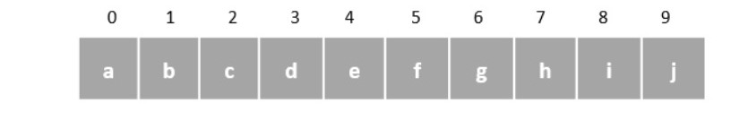
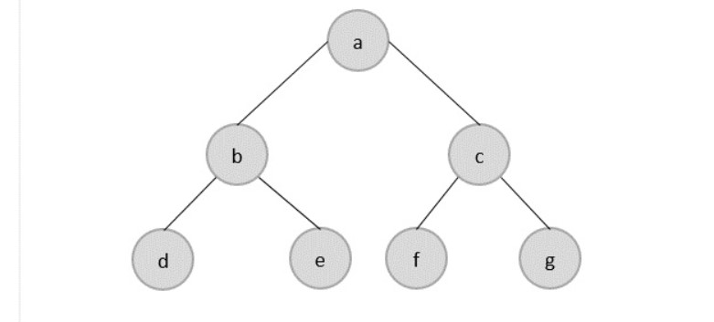

Data Structures and Types
Data structures are introduced in order to store, organize and manipulate data in programming
languages. They are designed in a way that makes accessing and processing of the data a little easier and
simpler. These data structures are not confined to one particular programming language; they are just pieces
of code that structure data in the memory.
Data types are often confused as a type of data structures, but it is not precisely correct even though they
are referred to as Abstract Data Types. Data types represent the nature of the data while data structures
are just a collection of similar or different data types in one.
There are usually just two types of data structures −
- Linear
- Non-Linear
The data is stored in linear data structures sequentially. These are rudimentary structures since the
elements
are stored one after the other without applying any mathematical operations.

Linear data structures are usually easy to implement but since the memory allocation might become
complicated,
time and space complexities increase. Few examples of linear data structures include −
- Arrays
- Linked Lists
- Stacks
- Queues
Based on the data storage methods, these linear data structures are divided into two sub-types. They are − static and dynamic data structures.
Static Linear Data Structures
In Static Linear Data Structures, the memory allocation is not scalable. Once the entire memory is used, no more space can be retrieved to store more data. Hence, the memory is required to be reserved based on the size of the program. This will also act as a drawback since reserving more memory than required can cause a wastage of memory blocks.
The best example for static linear data structures is an array.
Dynamic Linear Data Structures
In Dynamic linear data structures, the memory allocation can be done dynamically when required. These data structures are efficient considering the space complexity of the program.
Few examples of dynamic linear data structures include: linked lists, stacks and queues.
Non-Linear Data Structures
Non-Linear data structures store the data in the form of a hierarchy. Therefore, in contrast to the linear
data
structures, the data can be found in multiple levels and are difficult to traverse through.
However, they are designed to overcome the issues and limitations of linear data structures. For instance,
the main disadvantage of linear data structures is the memory allocation. Since the data is allocated
sequentially in linear data structures, each element in these data structures uses one whole memory block.

However, if the data uses less memory than the assigned block can hold, the extra memory space in the block
is wasted. Therefore, non-linear data structures are introduced. They decrease the space complexity and use
the memory optimally.
Few types of non-linear data structures are −
- Graphs
- Trees
- Tries
- Maps